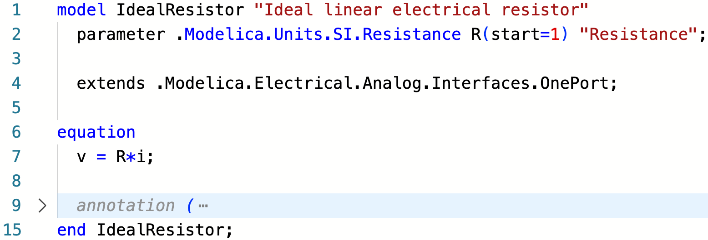
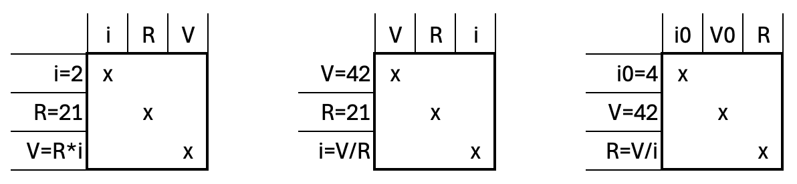
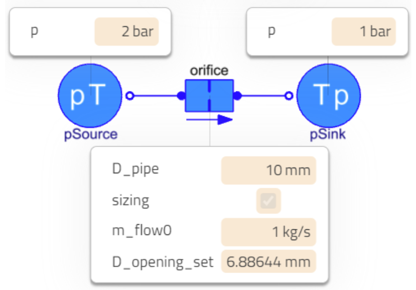

One model serves several purposes

I hope you’ve got your preferred drink in hand ☕️🫖💧
Last week, we covered the basics of acausality:
Acausality is the fact that equations are symbols and not assignments. So writing
V = R*iori = V/RorV - R*i = 0etc. makes no difference for an acausal model, because these are all equivalent. You write one model and the compiler will symbolically manipulate it in the form that is needed to solve your problem.
A quote from… me… Not the best practice, I know…
Today, I want to show you in practice how this applies when you use a library of models. I mean, not when you code equations yourself, rather when you build model by composition (drag&drop). And this scales well! Let’s dive in.
Starting easy
At school, when I was about 11years old, I had to “play” a lot with resistor. (I didn’t enjoy it much to be honest but…) Ohm’s law - V = R*i - got anchored in my brain… I guess I am not the only one. So let’s take that as an example. It is easy and still illustrates our point quite well.
Our ideal resistor model
I made an ideal resistor model. It just does Ohm’s law. Almost:

We have not seen much of the Modelica language so far. So let me paraphrase the code: - this IdealResistor has the same interfaces than a OnePort model. The one port model has two electrical pins and defines the voltage difference between the two pins as V and the current entering the component from the blue pin as positive. - I declared a parameter R of type Resistance so that it also gets the unit [Ohm] and assigned a start value of 1 Ohm. Why a start value? You’ll soon see. For now, it is enough to say that: 1. if you give the parameter a value, then this start value is not used, and 2. 2. if you don’t provide a value while it is needed, then most compiler will use the start value as parameter value (and raise a warning). - The very famous Ohm’s law is simply written as equation: V=R*i.
Of course, there is a resistor model in the Modelica Standard Library (keep in mind, we call it MSL, and I’ll soon just use only MSL because I am lazy) - check it out: Modelica.Electrical.Analog.Basic.Resistor. However, it also does more than just Ohm’s law, as it computes the dissipated power and can also include the resistance dependency on temperature. That is great, but for our example, it will just clutter our scope.
Acausality in practice
I claimed in the previous article, and somehow in the above quote, that the compiler will turn around Ohm’s law based on the known variable to solve for the other. Let’s prove it!

We set up two examples, both with a resistance value of 21 Ohm. This is a silly value but I don’t mind, I know the universal answer is 42, and this model gets to it… Where was I, ah yes: two examples. - On the left side, we specify that the current that enters the resistor is 2A. Ohm’s law tells us that the voltage V should be equal to R*i=21*2=42V! The universal answer! And that is what our simulation says! - On the right side, we specify that the voltage is 42. We want to prove that the model will be turned around and give us the same current i as on the left side: i=V/R=42/21=2A. Done!
One model, two purposes! And it is not over!
Bicausality or the sizing / on-design simulation
Remember how last week we could use our same equation to calculate the parameter value (the area of the runner)? Here we can also use the model to define the value of the ideal resistor. We just need to take one of the two examples and specify the value of the missing variable at initial time. So let’s take the right example and say that the initial current is 4A. We call that bicausality - because both causality are specified - or sizing - because we size the resistor’s resistance - or on-design simulation - because we solve a design problem. (Just in case you face these words in the future.)

Before claiming “Hooray!”, I need to pause for a few of explanations: - Why did I change the constant voltage source to a signal voltage source? I could have kept the constant source, but then we would not have observed the fact that the resistance is only computed once (at initial time) and then used as a fixed value for the rest of the simulation. See how the two lines on the right keep the same ratio? So I just chose to specify the voltage to be 42*(1+time) so that at the beginning of the simulation (I set the initial time to be 0), the voltage is 42V and after that it increases by 42V every second (crazy! but again, we don’t mind here). - Where do we specify the initial current? In the code, we just added resistor.i = 4; as initial equation and that does exactly that. It adds an initial equation to our system, saying that the current through the resistor is 4A - only at that initial time. - Are we really computing the value of the resistance? Yes! See how the icon of the resistor says R =, nothing. Blank. No value. We do not specify the resistance value. It is solved at initial time. - At initial time? 🤔 When you compile a Modelica model, there are actually TWO models being created. The first one is the initialization problem: it solves the initial conditions of your system - and as in this case the unknown parameters. The second is the time simulation problem: the one everyone thinks about - computing the time trajectories of all time variables.
Hooray! It worked!
Are you square?
Not you. The system of equations. This is something you might remember from school, and it is so important when developing models that I am keen to revisit the topic here.
Starting small: if you have one (1) equation with several variables - again, let’s take V = R*i - how many unknown variables can there be in this equation? Only one (1) variable, right? All the others need to be known! Changing the viewpoint, if you have three (3) unknown variables, you need three (3) equations.
You see how the number of equations shall equal the number of variables, for your system to be solvable. That is what is called a square system, because if you write the equations as rows and the variables as columns, you end up with a square (matrix).

In the first example (left), we knew i and R and solved Ohm’s law for V. In the second example (middle), we knew V and R and solved Ohm’s law for i. And lastly, we could find the value of R by solving Ohm’s law in the initialization problem, knowing i0 and V0.
A couple of notes: - It is obviously important that the equations you have are independent! If your equations are i=42, V=R*i and i=V/R, that won’t make it… because the two last ones are equivalent. - Now it might make sense why we had to add an initial equation for i on our on-design example: the value of R is unknown and needs to be solved from Ohm’s law at initialization. The value of V is known because at time = 0, its equation gave V=42. We needed to specify i, and we needed to specify it ONLY at initialization because as soon as the initialization problem is solved, the value of R is known (R is still a parameter, its value do not change during simulation!), V is known and so the third equation (Ohm’s law) needs to be solved for the current i.
That was a lot! Let’s show a nice example and wrap up for today!
This scales!
Imagine you are an aircraft designer. Imagine you want to electrify an aircraft. So you decide to add an electrical generator to the gas turbine, to generate electricity, store it in batteries and then reuse it when needed to provide propulsion through electrical propellers. Good idea! Actually not your idea, but a good one. 😉
What happens however is that the electrical component generate heat and this heat needs to be evacuated. So you have to design a cooling system that goes and “collect” the heat from the electrical components for them to operate at reasonable temperatures.
A flow balancing problem consists of sizing restrictions on flow branches of a fluid system to match desired flow rates on each branch. The problem is rarely trivial as parallel branches routinely contain many components with nonlinear pressure loss characteristics each.
Again, self-quoting… but I was not alone this time! Check the paper if interested! And shout out to Daniel Andersson, Nirmala, and Michael Sielemann for co-authoring this one 🙂
We used the same trick as for sizing the resistor. But we did it three times and on a larger system! It could have been more times and a larger system… this one was just meaningfully representing our system under study.

In the case of the orifice, we expect the pressures to be known at both sides and thus we additionally allow for specifying the initial mass flow rate in sizing mode.
On the overall system (below), we have three of such orifices (on the upper part of each branch) and they are meant to be sized to evacuate the right amount of heat coming from the “fire / exploding / red crown” components that represent heat sources.

Now if you remember, we should have a square system. I let you write the equations and verify whether that is true, “as an exercise”. Yeah, no, thanks! You might just want to trust me on this one 😅 But just for the feeling, you can think of it as: you specify some values for the orifices, the simulation runs, that means that the system is square. Now you convert three (-3) parameters (the orifices’ diameter) into unknowns for the initialization problem, that means that you need to add three (+3) initial equations for this to be square, and these are the initial mass flow rate specified at the orifice level. So we should stay square. 🙂
The END for today
Enough for today. I hope you enjoyed this other perspective on acausality. Next time, we will see a different topic. (Suspense!)
Break is over, go back to what you were doing.
Clément
Next ->
Bonus: resources for fast learners
© 2025 Clément Coïc — Licensed under creative commons 4.0. Non-commercial use only.